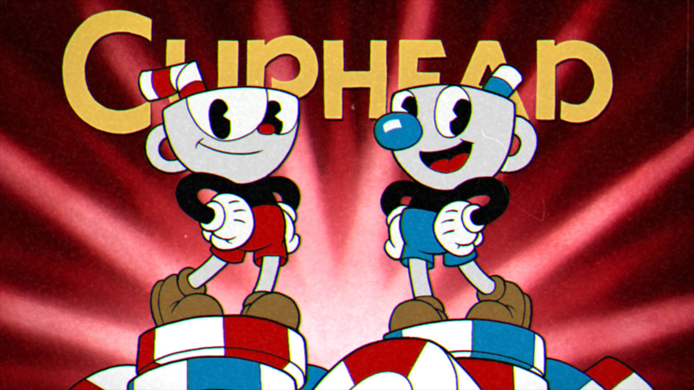
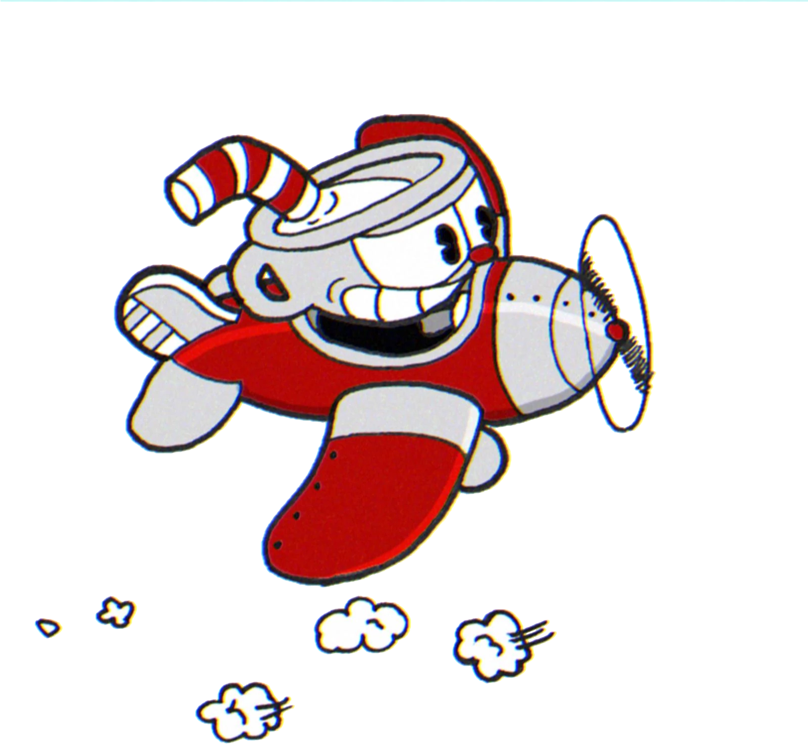

Saiba mais
Ficha técnica
Plataformas: PS4, Xbox One, Nintendo Switch, Windows e macOS
Desenvolvedora e distribuidora: StudioMDHR Entretainment
classificação indicativa: 10 anos
Cuphead apresenta dois jogadores que controlam o personagem-título e seu irmão Mugman, em uma aventura através da fictícia Inkwell Isle para derrotar uma série de chefes para pagar uma dívida adquirida com o diabo. O jogo foi elogiado por seu estilo de arte, jogabilidade, trilha sonora e dificuldade.
Cuphead é um jogo feito à mão inspirado nos desenhos doa anos 30, os criadores tentaram fazer os chefões como cada série do colégio, de brincadeira, colocaram animações antigas da Disney como personagens, o que, mais para frente, chamou a atenção da Microsoft e foi lançado oficialmente em 2017.
Cuphead usa a mesma técnica de animação dos cartoons do início do século XX, com a diferença dos personagens retratados reagirem aos seus comandos. É difícil fugir do clichê, mas de fato parece que você está controlando um desenho animado.
Cuphead por muitos é considerado um dos jogos mais difíceis já criados, gente dizia que Cuphead era Dark Souls dos games do gênero, por sua dificuldade, que também exige que você decore padrões de ataques e se concentre, porém não pune os jogadores por errarem, ou serem derrotados, possibilitando tentar novamente com dois cliques, o que de certa forma influencia jogadores a continuarem tentando.